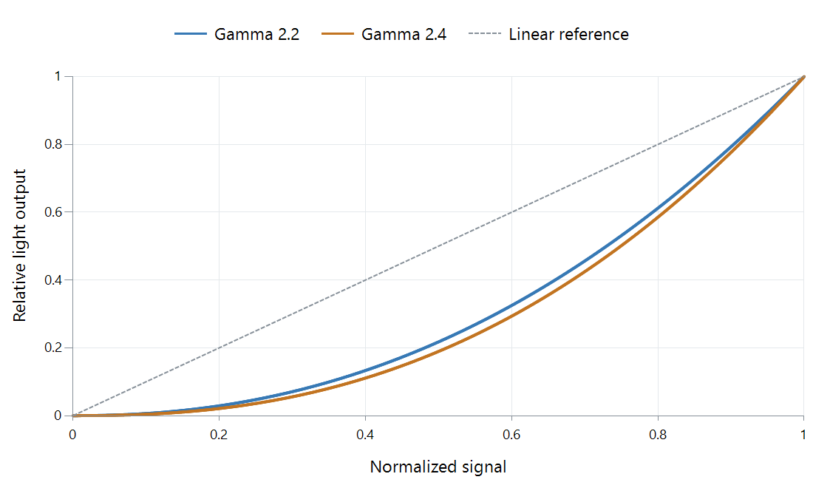

Video Gamma
Gamma is the exponent in a power relationship between picture values and light. In a simplified display model, output = input^gamma, with input and output normalized between black and white.
The curve matters most between the endpoints. Both of the example display curves below reach the same black and white, but the higher exponent produces less light at intermediate signal values.

Idealized display curves with zero black and the same white level. The dotted diagonal is a linear reference; these are not tone-mapping presets.
At a signal value of 0.5, gamma 2.2 produces about 0.218 of white, while gamma 2.4 produces about 0.189. On a hypothetical 100-nit display, that is roughly 21.8 versus 18.9 nits. The change can be visible without changing the maximum brightness at all.
Why the direction needs stating
A camera encoding curve often has an exponent below one; a display curve often has an exponent above one. Both can be called “gamma” in informal discussion. Always ask whether the number describes encoding, display output, or an adjustment made on top of an existing image.
Real standards need more than a bare exponent. BT.709's OETF includes a linear segment near black. BT.1886 accounts for display black and white. PQ is not a single power curve at all.
For playback troubleshooting, do not use a gamma adjustment to disguise a transfer-function or signal-range mismatch. It can make one scene look more acceptable while moving other tones farther from the intended result. In an Emby comparison, keep the file, output mode, and display settings consistent before judging whether two playback paths render the same picture.